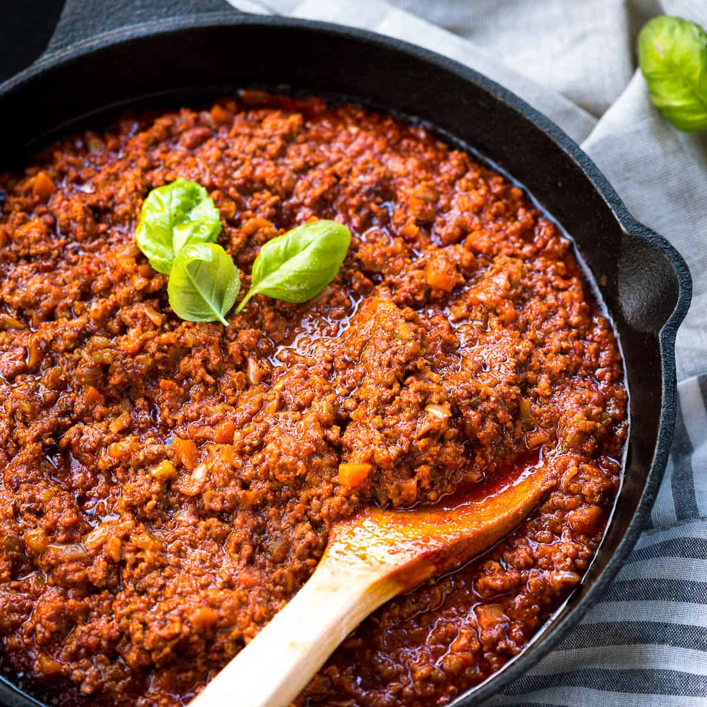

Ragu

Description
One of the most loved foods in the world is finally here! This is a beautiful Italian Ragu with layers of slow cooked Ragù Bolognese and Besciamella cheese sauce.
Ragu just rocks. Full stop.
Ingredients
- 1 tbsp olive oil
- 1 onion , finely chopped (white, yellow or brown)
- 1 medium carrot , peeled and very finely diced
- 1 celery stick , very finely diced
- garlic cloves , minced
- 1 kg / 2 lb beef mince (ground beef)
- 800g / 28 oz canned crushed tomato
- 1/4 cup tomato paste
- 1 cup pinot noir red wine , or other dry red wine
- 3 beef bouillon cubes , crumbled
- 2 bay leaves , dried or fresh
- 1/2 tsp EACH dried thyme and oregano
- 2 tsp Worcestershire Sauce
- 1 – 2 tsp sugar
- 1/2 tsp salt and black pepper
Steps
- Heat oil in a large heavy based pot over medium heat. Add garlic, onion, celery and carrots. Cook for 10 minutes until softened and sweet – they should not brown (if they do, turn heat down).
- Add beef, turn heat up and cook the beef, breaking it up as you go.
- Once the beef has all turned brown, add the remaining Ragu ingredients EXCEPT the sugar.
- Stir then adjust the heat so it is bubbling very gently. Place the lid on and cook for 1.5 – 2 hours, stirring every now and then, then remove the lid and simmer for 30 minutes.
- The ragu is ready when the meat is really tender and the sauce has thickened and is rich – see video for consistency. Adjust salt and pepper to taste, and add sugar if required.